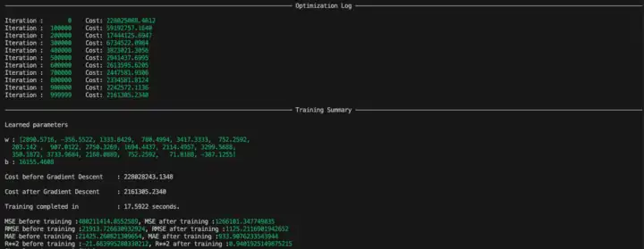

Abstract
This report demonstrates an application of multiple linear regression to salary estimation using the publicly available Factory's Salary dataset from Kaggle. Unlike the previous univariate implementation, this model considers multiple features that may influence the target variable. The preprocessing pipeline handles categorical, numerical, and cyclic features using one-hot encoding, z-score normalization, and sine/cosine cyclic encoding. The model was implemented from first principles using core Python and NumPy, without relying on high-level machine learning libraries. Batch gradient descent was used for optimization, and ridge regularization was applied to penalize large weights and improve coefficient stability. Model performance was evaluated using an 80/20 train-test split with MSE, RMSE, MAE, and $R^2$. The broader objective of the project was not only to build a predictive model, but to understand the lower-level abstractions involved in a complete regression pipeline.
Introduction
This is an extension of the work done previously in my report on univariate linear regression—a transition from univariate to multivariate formulations. Regression models form a pedagogical introduction to machine learning as they are among the most elementary models capable of attuning their parameters based on labeled data. Although transformer-based models take the limelight in contemporary AI discourse, linear regression serves as a stepping stone just as algebra serves as a precursor to calculus. Hence, this report explores an application of linear regression—multiple linear regression—on a salary prediction dataset to evaluate its predictive performance on unseen data.
Though pedagogically valuable, univariate linear regression’s capacity to handle most real world regression tasks remains quite limited. The earlier report—while assuming a single-variable dependency—explored the relationship between years of experience of an employee and their salaries with the intent on achieving generalizability. The inherently multivariate nature of salary prediction, with its diverse features ranging from categorical to numerical, demands a better solution. Multiple linear regression, by design, is capable of accommodating such complexity by taking diverse features into account through techniques like one-hot encoding and sine/cosine encoding for cyclic data. Hence, the decision to choose an MLR model for this problem can be justified.
Interactive Dashboard
I also built a small Streamlit dashboard to inspect the trained model artifact. It visualizes the learning curve, learned weights, evaluation metrics, and partial effects of the continuous features on predicted salary.
Open the Interactive MLR DashboardProblem Statement
Salary prediction, given its multivariate dependence, requires a model which can capture complex relationships between these variables. The Kaggle dataset, used in this report, contains employee related features presumed to affect salary. The objective is to construct a model that captures the relationship between features and salaries. Furthermore, it should be noted that the dataset contains data from several data-types—categorical, numerical and cyclic data. Hence, this project seeks to build a model that is capable of learning from diverse types of data and generalizing on unseen data as well.
Dataset Description
The dataset used in this report to train the multiple linear regression model was sourced from Kaggle and was published by Ivan Gavrilov under the title “Factory’s Salary”. The dataset is composed of various features spanning different data-types with the addition of the target variable—salary. The features include date (of payment), profession, rank, equipment (used), insalubrity and size_production (interpreted here as the individual’s or their profession’s contribution to the factory’s output).
The date feature exhibits cyclic properties; for instance, the month January, insofar as months are concerned, is adjacent to December even though numerically distant, and hence cyclic encoding was employed at the month level. Both the features profession and equipment are categorical features and were therefore one-hot encoded to make them suitable for the model. The rest of the data are all numerical and were directly utilized in training. With the features distinguished, data-types discerned and preprocessing techniques identified, the following section details the modeling pipeline that was used.
Methodology
Pre-Processing
A CSV reader was implemented using basic Python logic following the same from-first-principles ethos. The header row was separated from the dataset and used for feature identification later in the pipeline. Features and targets were separated for model training purposes as well.
The dataset consisted of cyclic, categorical and numeric data and hence relevant preprocessing techniques were utilized. Cyclic encoding by means of representing the dates—more specifically the months—as points on a unit circle ensured that valuable information regarding when the salary was provided was not lost. As mentioned previously, if the elapsing of months was assumed to be linear then the fact that January follows December given the periodic nature of months, would be lost. Hence the cyclic encoding :
For month $m \in \{1,\dots,12\}$: \[ \begin{aligned} m_{\sin} &= \sin\!\left(2\pi \frac{m}{12}\right),\\ m_{\cos} &= \cos\!\left(2\pi \frac{m}{12}\right). \end{aligned} \]
Furthermore, there were two columns of categorical data, namely the profession and the equipment columns. These were converted into numerical data by one-hot encoding them into dummy variables. One category per one-hot group was omitted to avoid perfect multicollinearity with the intercept term and ensure parameter identifiability.
After converting the raw data into numerical representations, the examples were shuffled and split into an 80/20 train-test split. In order to z-score normalize, the sample mean and sample standard deviation were computed per continuous numerical feature—excluding one-hot encoded variables and cyclic sine/cosine features. (It should be noted that all data shuffling processes and other random operations were carried out using a fixed random seed to ensure reproducibility of results).
The continuous features in the training split were standardized accordingly and the same training statistics were then applied to the test split in order to prevent data leakage.
One-hot variables were left in their binary form as well as the sine/cosine features as they were already bounded in [-1,1] and were not standardized.
This process produced the curated design matrix $X$ and target vector $y$ used in training and model evaluation.
Model Selection
Having converted the data into their respective numerical representations, the decision on how to model the underlying structure had to be evaluated. As a prima facie justification for using a linear model, the marginal relationships between the continuous features and the target variable were examined for approximate linearity.

The above graph suggests a possible linear trend between rank and salary

The above graph shows a possible linear relationship between insalubrity and salary

The above graph exhibits an approximately linear association between size_production and salary
Marginal linear trends, by nature, disregard interactions between features, conditional dependencies and how their dependent nature influences the target. Yet, the presence of such linear trends does not prima facie negate the assumed linear structure of the data and thus their existence suggests a linear hypothesis viable even though higher-order structure may later be required.
Collectively, these marginal trends motivate the use of MLR as a first-order model capable of aggregating these approximate-linear effects within a unified framework.
Despite marginal linear trends being examined only for continuous features, categorical and cyclic variables were incorporated through encodings that are conducive to linear models. One-hot encoding introduces binary indicator variables whose coefficients correspond to fixed additive offsets relative to a reference category (the coefficient gets added when an indicator is active and it simultaneously offsets the baseline). At the same time, the representation of a month as $(\sin\theta,\cos\theta)$ allows the model to express a smooth seasonal component of the form $a\sin\theta + b\cos\theta$ using a linear combination of these transformed features.
Based on these observations—the presence of marginal linear trends and the compatibility of the employed encodings with linear models—we can, justifiably, assume that multiple linear regression is an appropriate first-order hypothesis for this salary prediction task.
Model Definition
This problem involves a feature vector with $p=18$ features and $m=264$ training examples. Accordingly we define the MLR model as follows:
\[ \hat y_i = b + \sum_{j=1}^{p} w_j\,x_{ij}, \qquad i = 1,2,\dots,m \]
or equivalently:
\[ \hat y_i = \mathbf{x}_i^\top \mathbf{w} + b \]
In vector form, where
$m$ : number of examples
$p$ : number of features
$x_{ij}$ : value of feature $j$ for example $i$
$w_{j}$ : weight associated with feature $j$
$b$ : bias (intercept)
$\hat y_i$ : predicted output for the $i$-th example
Regularization and Cost Function Definition
In its unregularized form, OLS (Ordinary Least Squares) does not impose any constraint on the magnitudes of the learned weights; it requires only that the cost be minimized. When several features are correlated, coefficient estimates can become unstable under small changes in the training sample, particularly in how weight mass is distributed across those features. Such weights may fit the training set well while generalizing less reliably to unseen data.
i.e. OLS optimizes training error alone and is indifferent among multiple solutions with similar fit.
A resolution to this limitation of OLS is L2 or Ridge regularization. It augments the loss function with a penalty proportional to the squared Euclidean norm of the weight vector.
Regularized Cost:
\[ \begin{aligned} J(\mathbf{w}, b) &= \frac{1}{2m}\sum_{i=1}^{m} \left(\mathbf{x}_i^\top \mathbf{w} + b - y_i\right)^2 \\ &\quad+\frac{\lambda}{2m}\,\|\mathbf{w}\|_2^2. \end{aligned} \] \[ \|\mathbf{w}\|_2^2 = \sum_{j=1}^{p} w_j^2. \]
This augmented cost function presents itself as a tradeoff—rather than optimizing either criterion in isolation, (fitting the training data versus reducing the Euclidean norm of the weight vector), it incorporates both considerations into a single objective function, striking a balance between the two. That is, it seeks weights that fit the training data while penalizing solutions with large norms. This selection often—but not always—corresponds to distributing weight more smoothly across correlated features.
Training Algorithm
For $\lambda > 0$, the L2 regularized cost function is strictly convex and therefore possesses a unique global minimum. Due to the small dataset size (\(m=264\)), batch gradient descent was used, as the full gradient could be computed efficiently, yielding a stable, deterministic optimization trajectory. In contrast, modern large-scale neural networks (including transformer LLMs) often employ stochastic or mini-batch gradient methods, where gradients are estimated from subsets of data to reduce computation per update; this distinction is briefly discussed in the Appendix.
The update rule for each weight and bias term is defined as:
where, $\hat y_i = \mathbf x_i^\top \mathbf w + b$.
Each update moves the parameters in the direction of the steepest local decrease, i.e. the direction given by the negative gradient evaluated at the current parameters. (Refer to Appendix)
The weights and bias were initialized to zero before running the training algorithm. Upon experimenting with iteration count, learning rate and the regularization constant, the following choices were made for each hyper-parameter.
Iterations = 1000000
$\alpha$ = 5e-6
$\lambda$ = 10
These values were selected empirically by monitoring the convergence of the training loss as well as final test-set evaluation metrics.
Model Performance Evaluation
The model was evaluated on the test set using four regression metrics: mean squared error (MSE), root mean squared error (RMSE), mean absolute error (MAE), and the coefficient of determination ($R^2$).
Using several metrics is useful because no single quantity completely characterizes predictive performance. Squared error emphasizes large mistakes, MAE represents an absolute prediction error in the target's original units, and $R^2$ measures how much the model reduces squared prediction error relative to a baseline that always predicts the mean target value.
Mean Squared Error (MSE)
MSE is the average squared difference between the observed salaries and the salaries predicted by the model. Squaring the residuals penalizes larger prediction errors more heavily than smaller ones, making the metric useful both for assessing overall prediction error and for revealing a propensity to make unusually large errors. Its main caveat is that the result is expressed in squared salary units, which makes its magnitude less directly interpretable.
Root Mean Squared Error (RMSE)
RMSE is the square root of MSE. It retains the greater sensitivity to large errors created by squared residuals, while restoring the result to the original units of the target variable. Within this implementation, it can be interpreted approximately as the typical magnitude of prediction error in salary units.
Mean Absolute Error (MAE)
MAE is the average absolute difference between observed and predicted salaries. Unlike MSE and RMSE, it does not square residuals, and is hence less sensitive to the existence of a small number of extreme prediction errors. MAE serves as an easily interpretable estimate of the model's average absolute salary-prediction error, expressed in the original salary units.
Coefficient of Determination ($R^2$)
The coefficient of determination measures how much of the variation in the target values is explained by the model relative to a baseline model that predicts the mean salary for every observation; that is, how much better it is at prediction than simply predicting the mean value for each set of input features. An $R^2$ value of $1$ indicates perfect predictions, while $R^2=0$ indicates that the model performs no better than the mean-prediction baseline. A negative value indicates that the model performs worse than this baseline. Hence, $R^2$ is useful as a dimensionless measure of explanatory and predictive performance, though it should be interpreted alongside error metrics rather than in isolation.
where:

Model evaluation output before and after training
Evaluation Results
| Metric | Before Training | After Training |
|---|---|---|
| MSE | 480,211,414.86 | 1,266,101.35 |
| RMSE | 21,913.73 | 1,125.21 |
| MAE | 21,425.26 | 933.91 |
| $R^2$ | -21.6840 | 0.9402 |
In one training run, the model's mean squared error decreased from $480{,}211{,}414.86$ to $1{,}266{,}101.35$. Its root mean squared error decreased from $21{,}913.73$ to $1{,}125.21$, while its mean absolute error decreased from $21{,}425.26$ to $933.91$. The coefficient of determination improved from $R^2=-21.6840$ before training to $R^2=0.9402$ after training.
Conclusion
Implementing the multiple linear regression model while relying only on NumPy for vectorized computation helped develop a more intuitive understanding of how regression models with multiple input features work. Using a publicly available Kaggle dataset collected from a factory setting introduced practical preprocessing challenges that are not usually present in toy datasets. The preprocessing pipeline had to account for categorical, numerical, and cyclic features through one-hot encoding, z-score normalization, and sine/cosine encoding.
The dataset was randomized and split into training and test sets using an 80/20 split. A separate cross-validation set was not used in this elementary implementation; instead, the model was trained on the training split and evaluated on a held-out test split. Since the marginal plots of the numerical features against salary suggested approximately linear trends, and since the goal was foundational implementation rather than exhaustive model selection, polynomial feature expansion was not pursued.
Ridge regularization was applied in the gradient descent implementation to penalize large weights, improve coefficient stability, and reduce the risk of overfitting. L1 regularization, or Lasso, was not implemented because the feature space was relatively small and sparse feature selection was not a central objective. A comparison between Ridge and Lasso regularization would be a natural extension of this work.
The hyperparameters—$1{,}000{,}000$ iterations, a learning rate of $5\times10^{-6}$, and $\lambda=10$—were selected empirically by observing the learning curve and comparing the cost and evaluation metrics before and after training. MSE, RMSE, MAE, and $R^2$ all indicated successful convergence and substantial improvement after training.
A limitation of this study is that model selection was not performed using a separate cross-validation set. The learning rate, iteration count, and regularization constant were selected empirically by observing convergence behavior and test-set performance. The test set therefore influenced model-selection decisions indirectly, which may make the reported performance optimistic. These results should be interpreted as a demonstration of the implemented pipeline rather than a definitive estimate of performance on unseen data.
Overall, this project clarified the layered abstractions involved in building a machine learning pipeline: data representation, preprocessing, model definition, optimization, regularization, and evaluation. Avoiding high-level machine learning libraries made these layers more visible and helped build intuition about the lower-level mechanisms underlying machine learning systems.
References
[1] Gavrilov, I. Factory's Salary. Kaggle dataset. kaggle.com/datasets/ivangavrilove88/factorys-salary
[2] Ng, A. Machine Learning Specialization. Coursera. coursera.org/specializations/machine-learning-introduction
[3] James, G., Witten, D., Hastie, T., Tibshirani, R., & Taylor, J. (2023). An Introduction to Statistical Learning: With Applications in Python. Springer. doi.org/10.1007/978-3-031-38747-0
[4] Chandrawansa, M. (2026). Multiple Linear Regression from First Principles [Source code]. GitHub. github.com/miniduofficial/multiple-linear-regression
[5] Harris, C. R., Millman, K. J., van der Walt, S. J., Gommers, R., Virtanen, P., Cournapeau, D., et al. (2020). Array programming with NumPy. Nature, 585, 357–362. doi.org/10.1038/s41586-020-2649-2
[6] Python Software Foundation. Python Language Reference. python.org
Appendix
Perfect Multicollinearity
Assume that we have a multiple linear regression (MLR) model with p+1 features. Assume that p of these features are numerical and the other is categorical with K number of labels which are one-hot encoded as D_k for k=1,2,…,K.
Then the MLR model can be given as follows:
\[ \hat y = \beta_0 + \sum_{j=1}^{p}\beta_j x_j + \sum_{k=1}^{K}\gamma_k D_k, \]
where $\beta_0$ is the intercept of the model, $\beta_j$ for j = 1,2,…,p are the weights of the numerical features and $\gamma_k$ for k=1,2,…,K are the weights for the one hot encoded labels. (Note that we are considering all the labels within the category).
Also note that for a given D_k, $D_k\in\{0,1\}$ and
\[ \sum_{k=1}^{K} D_k = 1. \]
Now, since $\sum_{k=1}^{K} D_k = 1.$ we can write $\beta_0$ as :
\[ \beta_0 = \beta_0 \cdot 1 = \beta_0 \sum_{k=1}^{K} D_k. \]
and substituting this value back into the original equation gives :
\[ \begin{aligned} \hat y &= \sum_{j=1}^{p}\beta_j x_j + \sum_{k=1}^{K}\gamma_k D_k + \beta_0\sum_{k=1}^{K} D_k \\ &= \sum_{j=1}^{p}\beta_j x_j + \sum_{k=1}^{K}(\gamma_k+\beta_0)D_k. \end{aligned} \]
This shows that the intercept could be “absorbed” into the dummy coefficients because the dummies always sum to 1.
Now take a constant c and define a new parameter set :
\[ \begin{aligned} \beta_0' &= \beta_0 - c,\\ \gamma_k' &= \gamma_k + c \quad \text{for all } k=1,\dots,K,\\ \beta_j' &= \beta_j \quad \text{for all } j. \end{aligned} \]
Computing the predictions gives :
\[ \begin{aligned} \hat y' &= \beta_0' + \sum_{j=1}^{p}\beta_j' x_j + \sum_{k=1}^{K}\gamma_k' D_k \\ &= (\beta_0 - c) + \sum_{j=1}^{p}\beta_j x_j + \sum_{k=1}^{K}(\gamma_k + c)D_k. \end{aligned} \]
i.e.
\[ \begin{aligned} \hat y' &= \beta_0 + \sum_{j=1}^{p}\beta_j x_j + \sum_{k=1}^{K}\gamma_k D_k \\ &\quad + c\left(\sum_{k=1}^{K}D_k - 1\right). \end{aligned} \]
But $\sum_{k=1}^{K}D_k - 1 = 0$ for every row, so the last piece vanishes:
\[ \hat y' = \hat y \]
This shows that we can shift mass between $\beta_0$ and all $\gamma_k$ without changing predictions and hence the parameters are not uniquely determined: the design matrix is rank-deficient, hence perfect multicollinearity.
Thus by dropping one label $\sum_{k=1}^{K-1}D_k$ is no longer identically 1 (it’s 0 for the reference category), so the intercept can no longer be written as a linear combination of the remaining dummies; identifiability returns.
On Model Order
Within the context of regression modeling, the term order refers to the highest degree to which input variables appear in the functional form of the model. This notion is defined with respect to the variables as they are represented within the model in their final form, rather than their proto-variable counterparts.
A model is termed first order if its predictions depend linearly on each input variable, with no higher-degree terms or interaction terms present within the model. In the multivariate case, such a model is represented by,
\[ \hat y = \beta_0 + \sum_{j=1}^{p} \beta_j x_j, \]
where each feature $x_j$ is in the first power and contributes additively to the prediction.
Though feature engineering may transform the original variables in non-linear ways, the order of the model is dictated not by the original variables but rather by the engineered features. Due to the lack of polynomial or interaction features within the confines of this work, the MLR model employed remains first order with respect to the constructed design matrix.
Taylor Explanation
Let the unknown relationship between features and target be $y=f(x)+\varepsilon$, where $x\in\mathbb{R}^p$. If $f$ is assumed to be sufficiently smooth, a first-order Taylor expansion around a reference point $x_0$ gives:
\[ f(x) \approx f(x_0) + \nabla f(x_0)^\top (x - x_0) \]
i.e.
\[ f(x) \approx f(x_0) + \nabla f(x_0)^\top x - \nabla f(x_0)^\top x_0 \]
Define :
\[ \beta = \nabla f(x_0), \qquad \beta_0 = f(x_0) - \nabla f(x_0)^\top x_0 \]
Then :
\[ f(x) \approx \beta_0 + \beta^\top x. \]
Bias–Variance Tradeoff
In supervised learning, prediction error on unseen data can be conceptually decomposed into bias, variance, and irreducible noise. Bias captures error introduced by restrictive modeling assumptions—for example, using a linear model to represent nonlinear data—while variance captures the sensitivity of learned parameters to the particular training sample.
In multiple linear regression, high variance can manifest as unstable coefficient estimates, especially in the presence of correlated features or limited data. L2, or ridge, regularization mitigates this problem by discouraging large coefficient magnitudes. It reduces variance at the cost of introducing a small amount of bias: the fitted model deliberately gives up some flexibility in exchange for potentially more stable predictions on unseen data.
Striking a balance between an overly restrictive model and one that treats the training sample as perfectly representative of the population is known as the bias–variance tradeoff. Ridge regularization does not guarantee improved generalization in every setting, but it provides a principled mechanism for navigating this tradeoff.
On the Use of Gradient Descent
The loss function optimized in this work can be viewed as a scalar field over parameter space. At any point in that space, the gradient of the loss points in the direction of steepest local increase. Moving in the opposite direction therefore gives the direction of steepest local decrease.
Gradient descent exploits this geometric property by repeatedly updating the parameters in the negative-gradient direction. For the convex ridge-regression objective used here, sufficiently small updates reduce the loss until the parameters approach the unique global minimum. This interpretation provides an intuitive justification for the training rule independent of the specific algebraic form of the loss function.
A more detailed geometric and analytical treatment of gradient-based optimization methods is left for future elaboration.